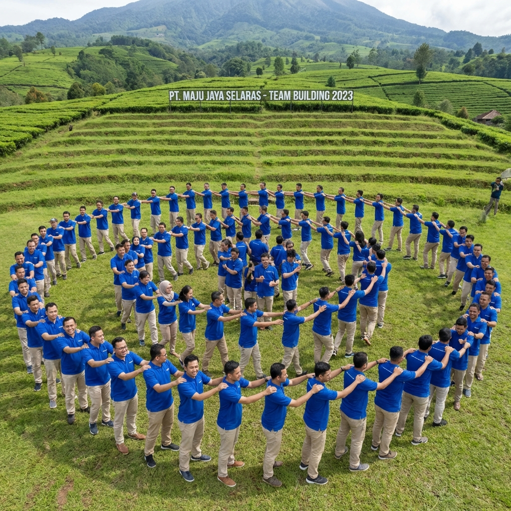

Memilih vendor outbound yang tepat di tengah menjamurnya penyedia jasa serupa di kota Batu, Malang, bisa menjadi tantangan tersendiri bagi panitia acara. Harga yang murah tentu menggoda, namun apakah jaminan kualitas dan keamanan tetap terjaga? Keputusan Anda dalam memilih vendor akan sangat menentukan apakah tujuan perusahaan tercapai atau kegiatan tersebut justru berakhir mengecewakan.
Sebagai pemain lama di industri ini, Gemilang Katun Outbond memahami kriteria apa saja yang membedakan antara vendor abal-abal dengan vendor profesional. Dalam artikel ini, kami akan membagikan 7 poin krusial yang harus Anda tanyakan dan periksa sebelum memutuskan untuk menjalin kerjasama dengan penyedia jasa outbound manapun di Batu Malang.
Periksa Legalitas Badan Usaha dan Sertifikasi Fasilitator
Hal pertama yang paling mendasar adalah legalitas. Pastikan vendor memiliki badan hukum yang jelas (PT atau CV). Mengapa ini penting? Karena jika terjadi sesuatu yang tidak diinginkan, Anda memiliki payung hukum yang kuat. Selain itu, vendor yang berbentuk badan hukum biasanya lebih serius dalam menjaga reputasi jangka panjang mereka.
"Jangan gadaikan keselamatan dan reputasi perusahaan Anda demi selisih harga yang tidak seberapa. Profesionalitas adalah investasi, bukan beban."
Sertifikasi fasilitator juga tidak kalah penting. Tanyakan apakah tim pemandu mereka memiliki sertifikat kompetensi dari **BNSP (Badan Nasional Sertifikasi Profesi)** di bidang kepemanduan outbound. Fasilitator yang bersertifikasi telah melalui uji kompetensi untuk menangani berbagai situasi di lapangan, termasuk manajemen risiko dan pertolongan pertama pada kecelakaan (P3K).
Kriteria Utama Vendor Berkualitas
- Track Record: Mintalah daftar klien yang pernah ditangani dan lihat testimoninya.
- Inovasi Program: Apakah simulasi permainan mereka up-to-date atau hanya itu-itu saja?
- Transparansi Biaya: Pastikan tidak ada biaya tersembunyi (hidden fees) di tengah acara.
Kesiapan dan Kualitas Peralatan di Lapangan
Cobalah untuk meminta foto atau melihat langsung gudang peralatan vendor jika memungkinkan. Peralatan outbound, terutama untuk kegiatan high impact seperti flying fox atau arung jeram, memiliki masa pakai (expired date). Vendor profesional akan memiliki jadwal perawatan alat yang ketat (log book maintenance).
Baca Juga: Paket Hemat Outbound Batu Malang dengan Fasilitas Lengkap
Selain peralatan teknis, periksa juga peralatan pendukung seperti sound system, megafon, dan perlengkapan P3K. Vendor yang profesional akan selalu menyiapkan rencana cadangan (contingency plan), misalnya menyediakan tenda darurat atau jas hujan jika tiba-tiba cuaca di Batu berubah mendung.
Fleksibilitas dalam Menyesuaikan Program
Setiap perusahaan memiliki budaya dan tantangan yang unik. Vendor yang hebat tidak akan memberikan program yang kaku (template). Mereka akan mendengarkan kebutuhan Anda terlebih dahulu (need assessment) dan kemudian merancang program yang spesifik untuk menjawab tantangan tersebut.

Proses koordinasi antara panitia klien dengan vendor sebelum acara dimulai.
Tingkat responsivitas tim sales dan marketing juga menjadi indikator profesionalitas. Jika untuk menjawab penawaran harga (quotation) saja butuh waktu berhari-hari, bayangkan bagaimana koordinasi mereka nantinya saat pelaksanaan di lapangan yang penuh dinamika?
FAQ Mengenai Pemilihan Vendor
Kesimpulan
Memilih vendor outbound di Batu Malang adalah soal membangun kemitraan. Vendor yang baik adalah mereka yang peduli pada kesuksesan acara Anda sebesar Anda memikirkannya. Dengan menerapkan tips di atas, kami yakin Anda akan menemukan partner yang tepat. Gemilang Katun Outbond selalu siap membuktikan profesionalitas kami untuk kesuksesan agenda Anda. Mari berdiskusi!